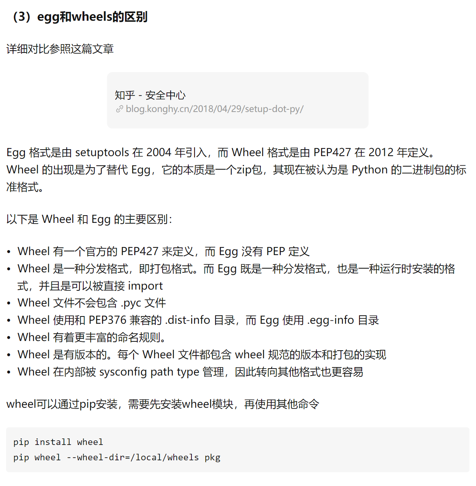
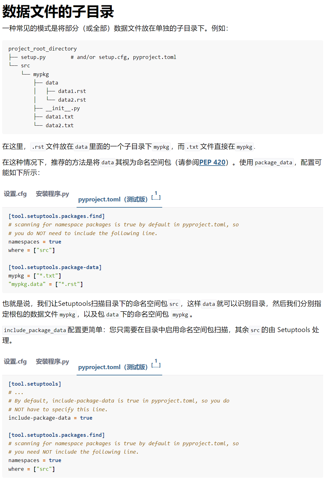

python包的构建和分发
官网地址：https://setuptools.pypa.io/en/latest/userguide/index.html
早期pkg管理工具easy_install，现在已经被pip取代。
其他细节：https://packaging.python.org/en/latest/key_projects/
早期的包构建和分发工具distutils，将在python3.12之后被移除，彻底采用setuptools
distutils：https://docs.python.org/zh-cn/3/library/distutils.html
打包工具推荐1.使用setuptools定义项目。2.使用build创建Source Distributions和wheel。如果您有二进制扩展并希望为多个平台分发轮子，请使用cibuildwheel作为 CI 设置的一部分来构建可分发轮子。3.使用twine将分布上传到PyPI。（需要先pypi创建账号）
源码包

二进制包
.gg包已经过时。


目前主流构建方式
默认环境
xxxxxxxxxx# build是python的命令行工具，可以通过它来快捷构建project$ pip install --upgrade build wheel setuptools setuptools-scm
推荐的构筑方式
xxxxxxxxxx# wheel 二进制格式$ python3 -m build --wheel source-tree-directory# sdist 源码格式$ python3 -m build --sdist source-tree-directory
xxxxxxxxxx# 命令行工具$ python -m build -h
配置文件的三种形式
x# 使用setuptools时，需要的包配置文件。任选一种or三种自由组合。。。pyproject.tomlsetup.cfgsetup.py# 这里我们选择官方推荐的.toml格式的配置文件（python 内置了）
目录结构
结构1
xxxxxxxxxxmypackage├── pyproject.toml # and/or setup.cfg/setup.py (depending on the configuration method)├── # README.rst or README.md (a nice description of your package)├── # LICENCE (properly chosen license information, e.g. MIT, BSD-3, GPL-3, MPL-2, etc...)└── mypackage1| ├── __init__.py| └── ... (other Python files)└── mypackage2├── __init__.py└── ... (other Python files).....
结构2本人强烈推荐这种布局

结构3

配置文件参数
元数据字段：https://packaging.python.org/en/latest/specifications/declaring-project-metadata/
xxxxxxxxxx# 官方推荐使用pyproject.toml在项目根目录中，一口气配置全部参数# 系统构建[build-system]# 使用插件requires = ["setuptools", "setuptools-scm"]# requires = ["setuptools"]build-backend = "setuptools.build_meta"# 配置工具[tool.setuptools]# 自动添加数据文件include-package-data = true# 配置插件[tool.setuptools_scm]# 设置版本自动更新write_to = "src/_version.py"# 默认版本模板write_to_template= '__version__ = "{version}"'# 版本风格version_scheme = "guess-next-dev"local_scheme = "no-local-version"# 项目基础信息https://packaging.python.org/en/latest/specifications/declaring-project-metadata/[project]# 项目名称name = "LeroykTest"# 版本，由于使用了setuptools_scm可以自动更新版本，如果配置，则会报错# version = "1.0.0"# 项目描述description = "用来测试python打包"# 完整自述文件readme.md or README.rstreadme = "readme.md"# python版本要求requires-python = ">=3.6"# 作者信息authors = [{email = "bridieiybnf@gmail.com"},{name = "LeroyK"}]# 维护人员# maintainers = [{name = "Brett Cannon", email = "brett@python.org"}]# 遵守协议license = {text = "MIT License"}# 分类器https://pypi.org/classifiers/根据需求填写classifiers = ["Programming Language :: Python :: 3","Development Status :: 4 - Beta"]# 忽略字段,会被彻底忽略，官方推荐安装setuptools_scm，则会忽略version这个字段dynamic = ["version"]# 关键字段,会被pypi展示keywords = ["name", "authors", "urls"]# 官方地址urls = {Project-URL="https://github.com/LeroyK111/python_packing_notes"}# 必须依赖dependencies = ["requests",'importlib-metadata; python_version>"3.6"',"PySimpleGUI"]# 可选依赖[project.optional-dependencies]pdf = ["ReportLab>=1.2", "RXP"]rest = ["docutils>=0.3", "pack==1.1, ==1.3"]# 更多网址# [project.urls]# homepage = "https://example.com"# documentation = "https://readthedocs.org"# repository = "https://github.com"# changelog = "https://github.com/me/spam/blob/master/CHANGELOG.md"# python脚本，可以直接在shell中执行LeroykTest从而调用func# 写在__init__中的对象，不需要在加点LeroykTest.__init__# https://setuptools.pypa.io/en/latest/userguide/entry_point.html[project.scripts]LeroykTest = "function"# PySimpleGUI专用[project.gui-scripts]spam-gui = "spam:main_gui"# 插件语法：https://setuptools.pypa.io/en/latest/userguide/entry_point.html# [project.entry-points."spam.magical"]# tomatoes = "spam:main_tomatoes"
简单目录结构，可以自己检查所有package。但是总有意外。。。算法并不是无敌的。
高级包管理tool.setuptools.packages
一般都是自动发现包，前提是目录结构不会太夸张.
https://setuptools.pypa.io/en/latest/userguide/package_discovery.html
xxxxxxxxxx# 方法一，手动包发现[tool.setuptools]packages = ["mypkg", "mypkg.subpkg1", "mypkg.subpkg2"]package-dir = {"" = "src"}[tool.setuptools.package-dir]mypkg = "lib""mypkg.subpkg1" = "lib1"# 方法二，列表配置，一项项来[tool.setuptools.packages.find]where = ["src"] # ["."] by defaultinclude = ["mypackage*"] # ["*"] by defaultexclude = ["mypackage.tests*"] # empty by defaultnamespaces = false # true by default# 方法三，字典配置包所在目录[tool.setuptools.packages]find = {} # Scanning implicit namespaces is active by default# ORfind = {namespaces = false} # Disable implicit namespaces
系统构建build-system
setuptools-scm：https://github.com/pypa/setuptools_scm/
xxxxxxxxxx[build-system]requires = ["setuptools", "setuptools-scm"]build-backend = "setuptools.build_meta"
入口点project.scripts
https://setuptools.pypa.io/en/latest/userguide/entry_point.html
xxxxxxxxxx除了对pkg中加入__main__.py，然后使用python -m pkg外。可以设置脚本script, 直接将命令放入shell中。可以全局调用。[project.scripts]my-script = "LeroykTest.module:function"
依赖管理
https://setuptools.pypa.io/en/latest/userguide/dependency_management.html
xxxxxxxxxx[project]# 必须依赖dependencies = ["docutils","BazSpam == 1.1","enum34; python_version<'3.4'","enum34; python_version<'3.4'","pywin32 >= 1.0; platform_system=='Windows'","Package-A @ git+https://example.net/package-a.git@main",]# 可选依赖[project.optional-dependencies]PDF = ["ReportLab>=1.2", "RXP"]
数据文件支持
https://setuptools.pypa.io/en/latest/userguide/datafiles.html
就是打包的适合，可以放入其他非.py的文件进入，比如html，css，js等等。。。
xxxxxxxxxx[tool.setuptools]# 开启数据打包即可include-package-data = true[tool.setuptools.package-data]# 筛选器mypkg = ["*.txt", "*.rst"]# 高级筛选器"*" = ["*.txt"]mypkg1 = ["data1.rst"][tool.setuptools.exclude-package-data]# 排除包mypkg = [".gitattributes"]

构建扩展模块(了解cpython)
https://setuptools.pypa.io/en/latest/userguide/ext_modules.html
Setuptools 可以构建 C/C++ 扩展模块。比如pandas numpy等.
通过插件，也可以构建golang。
xxxxxxxxxxpip install Cython
开发模式（了解）
https://setuptools.pypa.io/en/latest/userguide/development_mode.html
xxxxxxxxxxpip install --editable .
开始build
官网地址：https://pypa-build.readthedocs.io/en/latest/
有坑：
由于我们使用了setuptools_scm插件，则会自动更新project的version版本号，但是大多数情况，我们还是想要自定义版本号, 那我们就需要停用setuptools_scm插件。
xxxxxxxxxx# 如果报错，请查看log$ python -m build# 默认会生成root/dist文件夹，默认构筑两种形式。project|--dist| || |--LeroykTest-0.1.dev2-py3-none-any.whl| |--LeroykTest-0.1.dev2.tar.gz||--src||--module1|--module2|--__init__.py|--_version.py|...# 其他命令（只构筑源码or只构筑轮子）python -m build -husage: python -m build [-h] [--version] [--sdist] [--wheel] [--outdir OUTDIR] [--skip-dependency-check] [--no-isolation] [--config-setting CONFIG_SETTING] [srcdir]A simple, correct PEP 517 build frontend.output directory (defaults to {srcdir}\dist)--skip-dependency-check, -xdo not check that build dependencies are installed--no-isolation, -n do not isolate the build in a virtual environment--config-setting CONFIG_SETTING, -C CONFIG_SETTINGpass options to the backend. options which begin with a hyphen must be in the form of "--config-setting=--opt(=value)" or "-C--opt(=value)"
twine分发
官网https://twine.readthedocs.io/en/latest/
xxxxxxxxxx安装上传工具$ pip install twine
注册pypi账号
https://pypi.org/manage/account/

推荐生成token API密钥，配置$HOME/.pypirc文件进行上传包。
常用命令
推荐使用token配置文件，进行无登录的上传package。
$HOME/.pypirc
https://packaging.python.org/en/latest/specifications/pypirc/
xxxxxxxxxx# Twine 将提示您输入用户名和密码。（这里是即时login in）# 也可以使用.pypirc进行无登录上传文件。# 不推荐上传到测试库，经常失联！！！$ twine upload -r testpypi dist/*# 上传到PyPI：$ twine upload dist/*# 检查发行库（用来判断pypi和本地dist/*的一致性）$ twine check -h$ twine check dist/*# 注册（只适合提供注册服务的服务器，官方还是推荐PyPI token上传）$ twine register -h
xxxxxxxxxx# file: $HOME/.pypirc 用户目录下# 启用服务器[distutils]index-servers =pypitestpypiprivate-repository# 正式上传服务器[pypi]username = __token__password = <PyPI token># 测试上传服务器[testpypi]repository = https://test.pypi.org/legacy/username = <your TestPyPI username>password = <your TestPyPI password># 其他上传服务器[private-repository]repository = <private-repository URL>username = <private-repository username>password = <private-repository password>